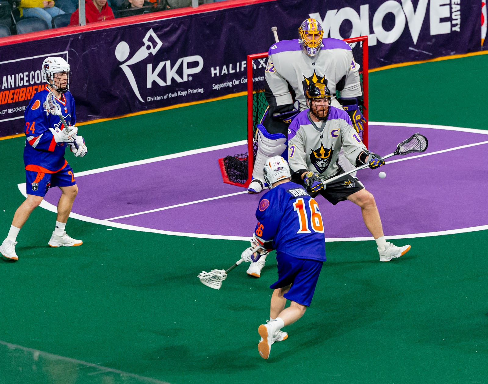
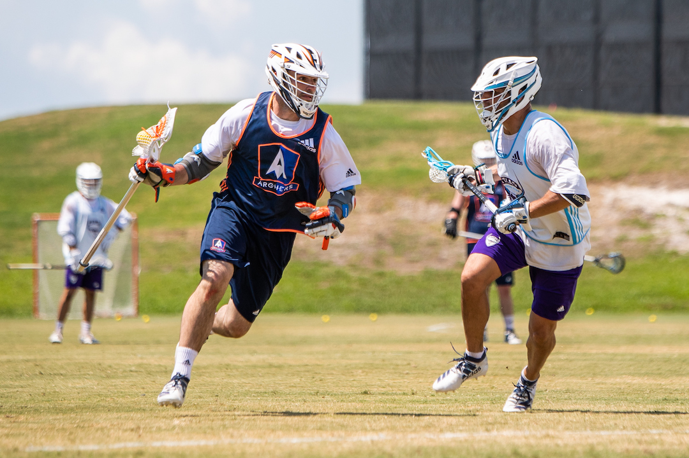

Box Lacrosse Major differences:

 Played Indoors
Different Helmets & Rib Pads are Used
The Sticks are Heavier and More Durable
All Positions Use the Same Short Stick Size Shaft
Fighting is Allowed
Played Indoors
Different Helmets & Rib Pads are Used
The Sticks are Heavier and More Durable
All Positions Use the Same Short Stick Size Shaft
Fighting is Allowed
Source
Field Lacrosse Major Differences:

 Played Outside
Defensemen Use Longer Sicks
The Field is Longer
Attackmen and Defensemen Stay on Their Side of the Field
Played as 6 Men Vs. 6 Men
Played Outside
Defensemen Use Longer Sicks
The Field is Longer
Attackmen and Defensemen Stay on Their Side of the Field
Played as 6 Men Vs. 6 Men
Colonials Who Play Professional Lacrosse:
Kevin Brownell
Kyle Buchanan
Tyler Digby
Tyson Gibson
JonPatrik Kealey
Luc Magnan
Kiel Matisz
Brad McCully
James Rahe
Justin Robinson
Jacob Ruest
Mitch Wilde
Source
Other Sources to Check Out